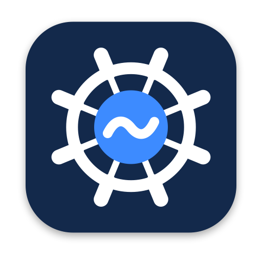

SSHKipper — нативный SSH-менеджер для macOS. Бастионы и 2FA без ручного ввода, AI-агент, который спрашивает разрешения, службы серверов, базы данных и бэкапы — в одном зашифрованном документе.
Двойной щелчок — и вы на сервере за двумя бастионами
SSHKipper сам проходит всю цепочку и отвечает на каждом сервере сам: ключ, пароль и код 2FA для каждого звена. Никаких окон и телефона в руке — строка вкладки показывает, через какие серверы вы прошли.
Путь до web-01: у каждого сервера — своя 2FA
Этот Mac
dns
bastion-mskops@bastion.northwind.corp
keyключverified_userкод 2FA — сам
из «ops-2fa»
checkкод подставлен
dns
jump-prodops@jump-prod
keyключverified_userкод 2FA — сам
из «ops-2fa»
checkкод подставлен
dns
web-01deploy@web-01
keyпарольverified_userкод 2FA — сам
из «deploy»
checkпароль и код подставлены
view_sidebaraddexpand_more
searchПоиск подключений
expand_more

Northwind
keyops-ed25519ops
keyops-2faops
persondeploy
expand_morefolderProduction
terminalbastion-msk
terminaljump-prod
chevron_rightterminalweb-01
terminalweb-02
chevron_rightfolderStaging
chevron_rightfolderБазы данных
chevron_rightTailscale
web-01searchПодключиться к серверу…⇧⇧foldersplitscreen_rightlockauto_awesome
terminalweb-01closeadd
Подключение к jump-prod…Подключено · 1 минbastion-msk›jump-prod›deploy@web-01auto_awesomeAI выклfolderФайлыsplitscreen_rightsplitscreen_bottommore_horiz
Подключение к web-01…
✓ Код 2FA для ops@bastion-msk (bastion-msk) подставлен автоматически из «ops-2fa»
✓ Код 2FA для ops@jump-prod (jump-prod) подставлен автоматически из «ops-2fa»
✓ Код 2FA для deploy@web-01 (web-01) подставлен автоматически из «deploy»
Linux web-01 6.12.48+deb13-amd64 #1 SMP PREEMPT_DYNAMIC Debian 6.12.48-1 x86_64
The programs included with the Debian GNU/Linux system are free software;
the exact distribution terms for each program are described in the
individual files in /usr/share/doc/*/copyright.
Debian GNU/Linux comes with ABSOLUTELY NO WARRANTY, to the extent
permitted by applicable law.
Last login: Wed Oct 28 09:12:44 2026 from 10.20.0.5
deploy@web-01:~$
Двойной щелчок по web-01 — коды всех трёх серверов подставлены, строка вкладки показывает пройденную цепочку.
Копия экрана SSHKipper: Окно SSHKipper: дерево подключений, вкладка web-01 подключается через bastion-msk и jump-prod, в терминале — строки о кодах 2FA, подставленных автоматически.
Цепочка любой длиныБастион может идти через другой бастион, первый — через SOCKS5 или HTTP-прокси.
Коды без телефонаСекрет TOTP — из base32, otpauth://, экспорта Google Authenticator или QR-кода. Повторный вход ждёт свежий код.
Один вход на серверВкладки, сплиты, файлы, Docker и базы одного сервера идут через одно соединение — без второй 2FA.
02AI-агент в ваших сессиях
Агент разбирается в сервере сам — и спрашивает, прежде чем что-то менять
Логи, нагрузку и контейнеры он смотрит без вас, но паролей, ключей и адресов не получает. Команду, которая меняет сервер, показывает карточкой: что, зачем и чем рискованно.
На Production перезапуск — только с вашего согласия.
ОтклонитьВыполнить ⌘↩
Ждёт вашего решения3 с
Задача для агента…
Claude Opus 5.5· средняяexpand_morestop
Каждая команда агента видна под терминалом, секрет в выводе замаскирован, перезапуск ждёт кнопки.
Копия экрана SSHKipper: Терминал web-01 с блоком «Команды агента» и AI-панель: агент проверил нагрузку и просит разрешения перезапустить контейнер — карточка помечена «опасно».
Четыре режима доступаСтрогий, Только чтение, Безопасная запись, Без ограничений — на сервер или папку. Production спрашивает всегда.
Каждая команда на видуПод терминалом — команды агента с причиной, выводом и кодом выхода. Ваша оболочка не меняется.
Ваши модели и агентыClaude Code, Codex, Cursor, ACP-агенты или API, включая Ollama. Внешним агентам — MCP с теми же правилами.
03Службы и дашборд
Сервер раскрывается в свои службы
Дашборд, Docker, Nginx, Caddy, Cron, Supervisor и Firewall — на одной вкладке сервера, по тому же SSH и через те же бастионы. Проблемы видны одной строкой сверху.
За 1 час: ≈6157 запросов. ≈939 ошибок 5xx, чаще всего на/legacy/feed· прочитано 1979 строк лога за 19 мин
northwind.shopexpand_more15 мин30 мин1 час6 часов24 часа
≈104запросов в минуту
79,7 %успешных ответов
5 %ошибок клиента 4xx
15,3 %ошибок сервера 5xx
≈167 КБотправлено
1,2 свремя ответа p95
150 /мин75
1 час назад2xx и 3xx4xx5xxсейчас
Время ответа p951,2 с шкала 1,5 с
Маршруты9 · по числу запросов
ПутьЗапросыДоляОбъём
/orders/{id}20 × 5xx36118,2 %4,8 КБ
/catalog/{id}21 × 5xx34817,6 %4,6 КБ
/legacy/feed206 × 5xx20610,4 %30,2 КБ
/favicon.ico6 × 5xx1949,8 %2,5 КБ
/checkout48 × 5xx1939,8 %2,7 КБ
Коды ответоввсего 1979
200OK155678,6 %
502Bad Gateway20610,4 %
500Internal Server Error1256,3 %
404Not Found924,6 %
Медленные запросыпо $request_time
Путьp95макс.раз
/reports/export1,2 с1,2 с174
Дашборд и Nginx — в одной вкладке web-01: числа, график, медленные маршруты.
Копия экрана SSHKipper: Страница служб сервера web-01: дашборд с нагрузкой, CPU, памятью и дисками, затем страница Nginx с запросами в минуту, долей ошибок 5xx и медленными маршрутами.
Nginx без rootЗапросы в минуту, 2xx/4xx/5xx, p95, медленные маршруты и ошибки — прямо из логов.
Свои виджетыМетрика, свой скрипт с порогами или виджет по описанию словами для AI.
Действия с подтверждениемПерезапуск в Docker и Supervisor, reload nginx после проверки конфигурации, логи потоком.
04Базы данных
Базы за бастионами — без ручных туннелей
MySQL, PostgreSQL, Redis, ClickHouse, MongoDB и SQLite открываются через ту же цепочку, что и терминал. Таблицы с правкой, редактор запросов, схема — и фильтр, который понимает слова.
northwindMySQL 8.0.41 · через web-01 → db-01:3306codeНовый запросhubСхемаrefreshinfosettings
searchТаблицы и колонки
northwindexpand_more· 2 базы4 · 592 КБ
grid_viewОбзор базы
tableaudit_log16 КБ
tablecustomers32 КБ
tableorders≈15 000 512 КБ
tableproducts32 КБ
chevron_rightПредставления1
codeЗапрос 1 · northwindtableordersclose
searchПоиск по всем колонкамФильтрФильтр · 1closeДанныеСтруктура
Своё условиеauto_awesomeСпросить AIОпишите словами — AI заполнит поля ниже, их можно поправить перед «Применить»close
отменённые заказы от трёх штукhubCodexunfold_moreСоставить
status = 'cancelled' AND qty >= 3
колонка DESCнет
infoУсловие, «топ-N» с порядком или отдельный запрос. Модель видит только колонки — не строки.Esc — закрытьПрименить ↩
idPK
bigint unsigned
customer_idFK
int unsigned
product_idFK
int unsignedqtysmallintstatusenum('new','paid','shippe…
111121paid
22272shipped
33444cancelled
445311new
556182paid
66791shipped
77883cancelled
889221paid
991131cancelled
101012402shipped
11111351paid
121214111new
131315272paid
13444cancelled
27883cancelled
31920205cancelled
42324244cancelled
52728283cancelled
63940405cancelled
74344444cancelled
84748483cancelled
95960605cancelled
10636444cancelled
11676883cancelled
127980205cancelled
138384244cancelled
Строка 3Строка 1id 3chevron_right
id PK · bigint unsigned
3
customer_id · int unsigned
4 → customers
product_id · int unsigned
4 → products
qty · smallint
4
status · enum('new','paid','shipped','cancel…
cancelled
ИзменитьДублироватьcontent_copydelete
add−SELECT * FROM `northwind`.`orders` W…qty >= 3) ORDER BY `id` LIMIT 3001–300 из 450по 300expand_moreЭкспортrefresh
Вкладка базы northwind: фраза «отменённые заказы от трёх штук» стала условием WHERE.
Копия экрана SSHKipper: Вкладка базы northwind (MySQL через web-01): AI-фильтр превращает фразу «отменённые заказы от трёх штук» в условие WHERE, в таблице — отфильтрованные заказы.
Фильтр словамиФраза становится условием WHERE, которое можно поправить. Модель видит только колонки, а не строки.
Production под защитойКаждое изменение — окном с полным SQL и проверкой AI по кнопке. «Только чтение» запрещает изменения совсем.
Правка таблицЯчейки и строки с показом SQL и записью одной транзакцией; экспорт CSV и JSON.
05Автоматизации и бэкапы
Ночной бэкап базы — из блоков, без скриптов
Дамп, сжатие, выгрузка в S3, ротация и итог — модули на полотне. Запуск по расписанию, после другой автоматизации, по событию или прямо в crontab сервера.
view_sidebarАвтоматизации›Ночной бэкап MySQL✓ удачно · 03:30 · следующий: завтра в 03:30ОбзорШагиИсторияПолотноscheduleКаждый день в 03:30expand_moreauto_awesomeaddplay_arrowЗапустить
Полотно «Ночной бэкап MySQL»: шаги загораются по очереди, у каждого — результат.
Копия экрана SSHKipper: Полотно автоматизации «Ночной бэкап MySQL»: northwind → MysqlDump → Сжать → В хранилище → Ротация → Итог, все шаги выполнены успешно, расписание — каждый день в 03:30.
Готовые модулиmysqldump, mydumper, XtraBackup, ClickHouse, Redis, rsync, архив папки, проверка сайта — или свой модуль.
Запуск без вас — по вашему разрешениюПеред первым запуском — окно со всеми командами и секретами словами. Если нужен ответ, автоматизация ждёт вас.
Бэкап, который точно восстановитсяПроверка восстановлением во временном контейнере Docker на этом Mac; итог — в уведомлении или Telegram.
06Файлы: SFTP, S3 и WebDAV
Сервер, Mac и облако — в двух панелях
Файлы сервера по SFTP рядом с бакетом S3 или папкой WebDAV: перетащите — и передача пошла, с паузой и докачкой. Хранилища живут в том же дереве, что и серверы.
view_sidebaraddexpand_more
searchПоиск подключений
expand_moreNorthwind
keyops-2faops
persondeploy
expand_morefolderProduction
terminalbastion-msk
terminaljump-prod
expand_moreterminalweb-01swap_horiz
inventory_2Бэкапы · S3
terminalweb-02
chevron_rightfolderStaging
chevron_rightfolderБазы данных
Файлы: web-01 ⇄ Бэкапы · S3searchПодключиться к серверу…⇧⇧foldersplitscreen_rightlockauto_awesome
Сервер по SFTP и бакет S3 рядом; «Скопировать … напрямую» отправляет архив с web-01 прямо в бакет, без Mac — ход виден в очереди передач.
Копия экрана SSHKipper: Вкладка «Файлы»: слева web-01 по SFTP (/srv/backups), справа хранилище «Бэкапы · S3» (backups/mysql); внизу идёт передача архива в S3, после неё файл появляется в бакете.
SFTP рядом с терминаломПанель файлов следует за cd; правка во внешнем редакторе, права для многих файлов сразу, Quick Look.
S3 и WebDAVAWS, Yandex Object Storage, Selectel, Cloudflare R2, MinIO, Nextcloud, Яндекс Диск; ссылки S3 на час, день или неделю.
Очередь с докачкойПауза, продолжение, понятные конфликты имён; закрытая вкладка передачу не обрывает.
07Копирование напрямую
Файл идёт с сервера на сервер напрямую, минуя Mac
Файл с сервера за бастионом копируется прямо на бастион: 2FA вводит приложение, ключ остаётся на Mac, SHA-256 сверяется на обоих концах.
Копия экрана SSHKipper: Окно «Копирование напрямую»: архив с web-01 копируется на bastion-msk, не через Mac; журнал показывает вход с ключом, отправленный код 2FA и совпавший SHA-256.
Не через ваш каналФайл идёт между серверами напрямую — домашний интернет в передаче не участвует.
Сервер ↔ S3 — тоже напрямуюАрхив с сервера уходит в бакет, не останавливаясь на Mac.
Проверено на обоих концахSHA-256 сверяется после копирования; ключ остаётся на Mac, коды 2FA вводит приложение.
08Терминал
Терминал на движке Ghostty — и одна команда сразу везде
Быстрый GPU-рендер, вкладки и сплиты, сессии tmux, которые переживают обрыв. Ввод во все вкладки выделяет участников рамкой; серверы Production — только по явному выбору.
uptime набран один раз и выполнился в обеих панелях.
Копия экрана SSHKipper: Вкладка web-01, разделённая на две панели в оранжевых рамках: команда uptime набрана один раз и выполнилась в обеих; внизу плашка «Ввод идёт в 2 сессии».
tmux на сервереПосле обрыва или ⌘R вы возвращаетесь туда же, фоновые задачи продолжают работать.
СниппетыКоманды с полями {{ host }} и вопросами — на нескольких серверах сразу, с итогом по каждому.
Журналы сессийЗапись вывода с маскировкой секретов, зашифрованная ключом документа; экспорт в asciinema.
09Туннели и строка меню
Туннели и расписания работают, даже когда окно закрыто
Штурвал в строке меню показывает туннели и автоматизации, отвечает на «Спросить меня» и подключает по имени. Нагрузка на процессор в фоне — почти нулевая.
SSHKipper2 туннеля · 1 подключение
settings
searchПодключиться… (имя или user@host)
АвтоматизацииВсе ›
Всё спокойно: 1 автоматизация, следующий запуск сегодня в 03:30
Туннеливключено: 2
MySQL prodчерез web-01 → db-01:3306
:13306
swap_horiz
Консоль S3через web-01 → s3.backup:9001
:19001
swap_horiz
SOCKS через bastion-mskчерез bastion-msk · SOCKS
:1080
Избранное
Отметьте подключение звёздочкой (меню узла → «В избранное»), чтобы открывать его отсюда.
Документ
lock_open
Northwindоткрыт
Заблокировать
Открыть SSHKipperВыйти
Строка меню: включить туннель — один щелчок.
Копия экрана SSHKipper: Окно строки меню SSHKipper: поле подключения, сводка автоматизаций, три туннеля с портами и переключателями, избранные серверы и кнопка блокировки документа.
Туннели всех видовК сервису, SOCKS-прокси и обратный — через ту же цепочку бастионов.
Включаются самиВручную, при разблокировке документа или вместе с сервером; после обрыва переподключаются.
Импорт ~/.ssh/configProxyJump и пробросы портов становятся бастионами и туннелями.
10Маршрут, профили, Tailscale
Видно, как вы попадаете на сервер — и есть запасной путь
Схема маршрута строится по фактам документа: бастионы, ключи, коды 2FA. У сервера может быть несколько профилей — Tailscale, офисный адрес, другой бастион; при сетевой ошибке пробуется следующий.
terminal
web-01Production · web-01
Tailscale · web-01dnsОфисlanguage10.20.4.21add
Маршрут до «web-01»ПонятноТехнически
Этот Mac
dns
bastion-mskops@bastion.northwind.corp
keyключverified_userкод 2FA — сам
из «ops-2fa»
dns
jump-prodops@jump-prod
keyключverified_userкод 2FA — сам
из «ops-2fa»
dns
web-01deploy@web-01
keyпарольverified_userкод 2FA — сам
из «deploy»
Профили web-01 и схема маршрута по фактам документа.
Копия экрана SSHKipper: Сверху — шапка карточки подключения web-01 с профилями: Tailscale, Офис и адрес. Ниже — вкладка «Маршрут до web-01»: этот Mac → bastion-msk (ключ) → jump-prod (ключ и код 2FA) → web-01 (пароль и код 2FA).
Tailscale и локальная сетьХосты tailnet и серверы, найденные по Bonjour, появляются в дереве сами и наследуют настройки папки.
Профиль хранит только отличияВсё, что не задано, берётся из основного; ключ сервера общий, если это тот же sshd.
Свои схемыХолст с узлами документа и живыми Docker, nginx и cron; по шагам и с вопросом к AI.
11Документ и безопасность
Всё в одном зашифрованном файле — и это бесплатно
Подключения, пароли, ключи и секреты 2FA лежат в одном документе: Argon2id и XChaCha20-Poly1305. Открывается мастер-паролем или отпечатком пальца.
SSHKipper
SSHKipper
lockNorthwind.sshkipper
Мастер-пароль
checkРазблокировать по Touch ID на этом Mac
Ещёexpand_moreРазблокировать
Окно блокировки документа: мастер-пароль или Touch ID.
Копия экрана SSHKipper: Окно блокировки документа Northwind.sshkipper: поле мастер-пароля, отметка «Разблокировать по Touch ID на этом Mac» и кнопка «Разблокировать».
Ключ восстановленияВыручит, если забыли пароль; пять прошлых версий файла хранятся зашифрованными.
АвтоблокировкаПри блокировке экрана, сне Mac или простое; доступ AI отзывается сразу.
Маскировка секретовВсё, что уходит модели, проходит потоковую маскировку; каждый вызов агента — в журнале аудита.
И это ещё не всё
Остальное — коротко, по разделам.
lan
Подключения
Учётные данные одним узлом · SSH-ключи ed25519/ECDSA/RSA во встроенном ssh-agent · прокси SOCKS5 и HTTP · проверка ключей серверов и свой known_hosts · свои опции ssh и команда после входа · быстрое подключение user@host
terminal
Терминал
Вкладки и сплиты · наборы вкладок · локальный терминал как узел документа · поиск в выводе и в tmux · буфер обмена с сервера (OSC 52) с разрешения · безопасный ввод · темы Ghostty
dns
Службы
Docker и Compose, в том числе на этом Mac · Caddy с сертификатами · Cron с расписанием словами · Supervisor · Firewall: кто может подключиться к порту · Fail2ban · хост Proxmox · службы в контейнере · логи с AI
folder_open
Файлы
Панель SFTP рядом с терминалом · правка во внешнем редакторе · права для многих файлов сразу · Quick Look · ссылки S3 на час, день или неделю · Nextcloud со входом через браузер
database
Базы данных
Редактор запросов с автодополнением и историей · структура, DDL и схема связей · Redis: ключи, память по префиксам, консоль · MongoDB: документы и агрегации · SQLite на сервере и на Mac · драйверы — отдельным расширением
account_tree
Автоматизации
Свои модули с проверкой на сервере · «Спросить меня», пауза, условие · сжатие zstd/gzip, шифрование age · выгрузка на Mac или внешний диск · AI: черновик по описанию, модуль «Агент», «Почему упало?» · все автоматизации на одной вкладке
auto_awesome
AI-ассистент
План из нескольких команд одной карточкой · проверка второй моделью · секреты для sudo через Touch ID · виды и графики в ответах · поиск в интернете · чаты по серверам, история зашифрована
hub
Схемы
Схема маршрута · холст с вложенными рамками · шаги с бегущей точкой · живые узлы · «Спросить AI» о выделенном · копия картинкой или PNG
lock
Безопасность
Несколько документов, каждый блокируется отдельно · экспорт в OpenSSH config без секретов · разрешения «на этом Mac» для команд из чужого документа · журнал аудита с цепочкой записей
apps
Приложение
Нативное, на AppKit — без Electron и WebView · дерево с наследованием настроек · режим «По папкам» · быстрый запуск ⇧⇧ · логотипы и цветные метки · меню Dock · русский, English, 简体中文 · модули для своих интеграций · обновления через Sparkle
Бесплатно для пары серверов
Один DMG для всех. Без ключа — бесплатная версия: в ней есть всё, но с лимитами. С ключом — полная. Пробного периода нет: бесплатная версия и есть проба.
Бесплатная версия
0 ₽навсегда
1 открытый документ
5 подключений
1 открытый терминал
1 автоматизация, запуск вручную
5 сообщений AI-ассистенту в чате (новый чат — снова 5)
1 включённый туннель, 1 база данных, 1 хранилище
Документ больше лимитов — например, от коллеги — открывается только для чтения.